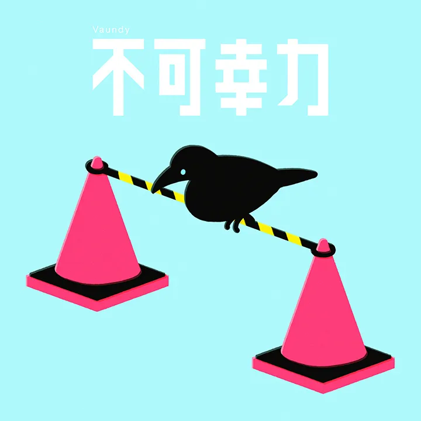
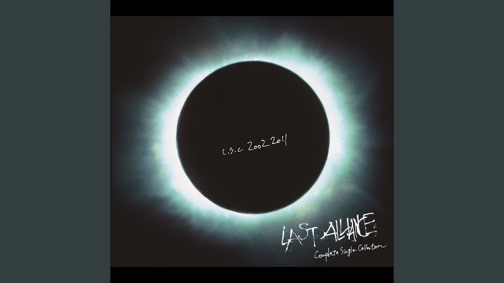

| 개화 | 不可幸力 | 疾走 |
아른아른 아지랑이 괜히 눈이 부시고
포근해진 얼음은 겨우 녹아내릴 것만 같아
동지섣달 기나긴 밤 지나 헤매었던 발걸음
있잖아 (까맣고 혼자 외로운 날) 그 때가 기억조차 안나
새하얗게 웃던 날을 기억하나요 그대
적당히 신나는 멜로디와 바이올린 소리!
도입부를 들으면 모든 생각을 잊을 수 있어요

사진을 누르면 이동합니다.
どこに行っても行き詰まり
そして憤りをそのままどっかに出すくだり
そんな劣等も葛藤も皆持ってる
その理由は同じ
何でもかんでも欲しがる世界じゃない
また回る世界に飲まれてる
それも理由は同じ
膨らんだ妄想幻想真相を
いや、あれを探している
어디를 가든 막다른 골목
그리고 그대로 어딘가에 성을 내는 패턴
그런 열등도 갈등도 모두 가지고 있어
그 이유는 같지
이것도 저것도 원하는 세계가 아니야
또 돌아가는 세계에 삼켜지고 있어
그것도 이유는 같지
부풀어 오른 망상 환상 진상을
아니, 그것을 찾고 있어
모두가 미쳐가는 세상이란 말과 잘 어울리는 가사!
강한 비트를 듣고 있다 보면 멍해지게 돼요.

사진을 누르면 이동합니다.
ここまで来ればいいだろう?どこまでがOK?
街を彩る木々は模様替え繰り返してる
変わり果てた白さ 変われない弱さ
今ここにいる自分を信じたい
右手左手振りかざして闇を切り裂いてGO!
偽りはないぜ 覚悟決めてるぜ
スタート切ったその瞬間から世界は広がるさ
여기까지 가면 되겠지? 어디까지가 OK야?
마을을 물들이는 나무들은 모습을 계속 바꿔가
너무나 바뀐 이 마음 바뀌지않는 나약함
지금 여기 있는 나를 믿고 싶어
오른손 왼손을 번쩍 들어 어둠을 찢어내고 GO!
거짓은 없어 이미 각오했어
스타트한 그 순간부터 세상은 넓어져 갈 거야
질주라는 제목 그대로 마구 달리는 듯한 가사!
도입부의 드럼 소리와 함께 모든 걸 내려놓고 멜로디를 즐겨보아요.